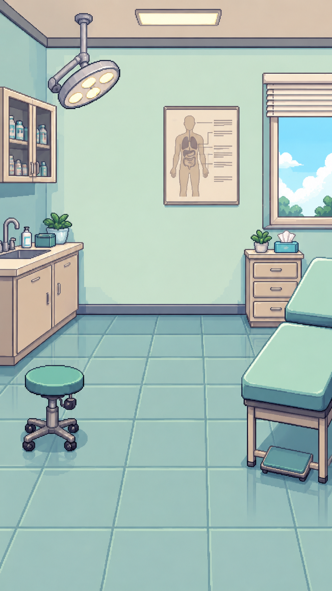

피드백을 선택하면 상세 내용을 확인할 수 있습니다.
Demo case | Patient role only
CODE MEDI CPX ROOM

Patient
Learner
대화 시작을 누른 뒤 질문을 입력하면 환자가 답변합니다.
CPX Coach
열린 질문으로 시작하세요. 환자 역할 경계를 유지합니다.
Question / Answer log
진단 스프레드시트
질문과 환자 응답이 여기에 기록됩니다.
Educational feedback
CPX Report
Coverage
0%
Missed
0
판단 보완
0
확인할 피드백
Next practice